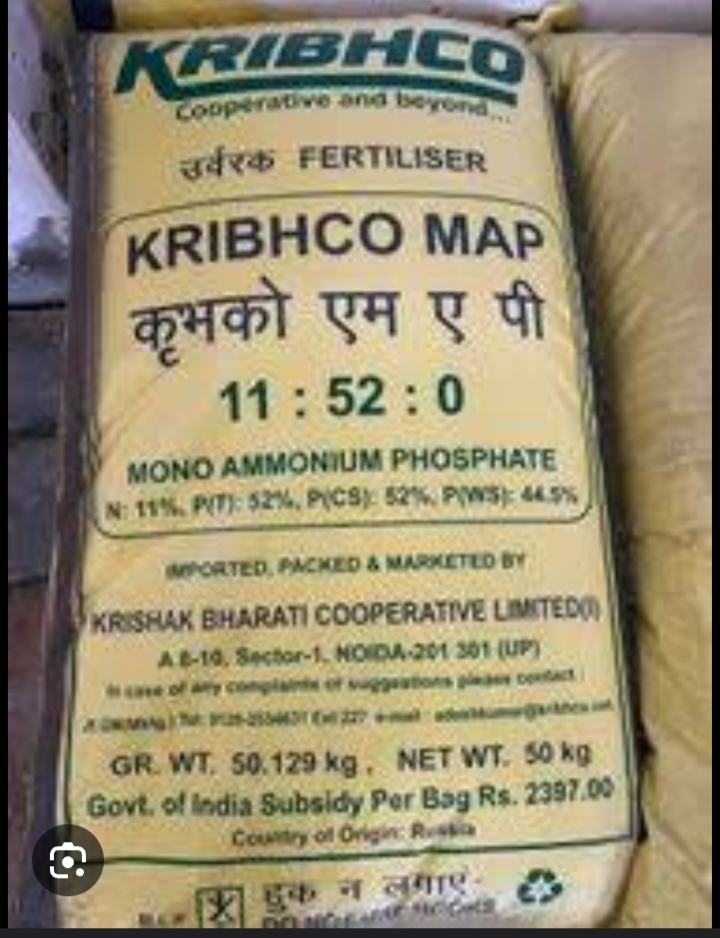

Description:
Mono-Ammonium Phosphate (MAP) is a phosphorus-rich fertilizer essential for cotton cultivation. It promotes root development, flowering, and boll formation in cotton plants. Phosphorus is vital for energy transfer within the plant and plays a key role in reproductive processes.
- Content:
1. Nitrogen (N): 11%
2. Phosphorus (P): 52%
3. Potassium (K): 0%
- Points:
- High phosphorus content stimulates root growth and enhances flower and boll production.
- Ideal for application during the flowering and boll-setting stages of cotton growth.
- Helps improve cotton fiber quality and overall yield.